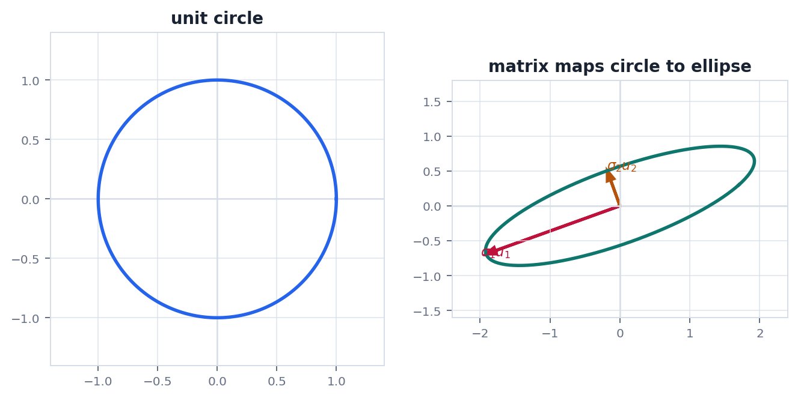
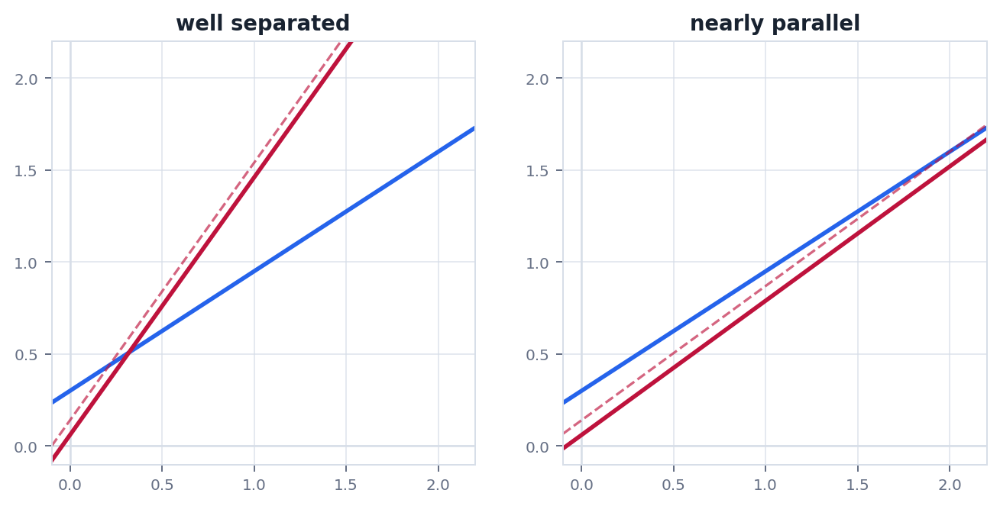

Route
0. 全章主线
分解不是为了形式漂亮, 而是为了求解, 投影, 压缩和控制误差.
LU把消元过程保存下来.
QR用正交基做稳定投影.
Cholesky正定系统的高效分解.
SVD任何矩阵的主方向分解.
条件数误差会被放大多少.
Factorization
1. 常见分解各自解决什么
不同分解服务不同问题, 不能只背名字.
| 分解 | 形式 | 典型用途 |
|---|---|---|
| LU | $A=LU$ | 多次求解同一个系数矩阵的方程组 |
| QR | $A=QR$ | 最小二乘, 正交化, 稳定求解 |
| Cholesky | $A=LL^T$ | 对称正定系统, 协方差, 能量矩阵 |
| SVD | $A=U\Sigma V^T$ | 低秩近似, 伪逆, 降维, 病态诊断 |
SVD
2. SVD 的核心图像
SVD 把任意矩阵拆成输入正交方向, 单轴缩放和输出正交方向.
$$
A=U\Sigma V^T
$$
$V^T$ 先把输入转到右奇异向量坐标, $\Sigma$ 按奇异值缩放, $U$ 再转到输出方向. 奇异值越小, 对应方向越容易放大误差.
$$
A_k=\sum_{i=1}^k\sigma_i u_i v_i^T
$$
截断 SVD 给出 Frobenius 范数和谱范数意义下的最佳低秩近似.
Conditioning
3. 条件数和数值稳定性
数学上有唯一解, 不代表数值上容易求.
$$
\kappa_2(A)=\frac{\sigma_{\max}(A)}{\sigma_{\min}(A)}
$$
条件数大表示某些方向被矩阵压得很扁. 求逆或求解时, 这些方向上的微小测量误差会被巨大放大.
常见误区行列式很小不等于条件数一定大, 行列式不小也不保证条件数好. 条件数关注最大和最小伸缩比例.
Geometry
4. 几何图像: SVD 和病态问题
SVD 把单位圆变成椭圆, 条件数就是长短轴比例.


Physics
5. 物理问题: 有限元刚度矩阵
大型结构求解需要分解和条件数视角, 不能只看理论公式.
问题有限元静力分析常得到 $Ku=f$. $K$ 是大型稀疏刚度矩阵, $u$ 是节点位移, $f$ 是外力. 直接求逆既慢又不稳定.
$$
Ku=f,\quad K=K^T,\quad K\succ0\ \text{after boundary conditions}
$$
工程上会利用稀疏 Cholesky, 共轭梯度或预条件器. 预条件的目标是降低有效条件数, 让迭代更快收敛.
Checklist
6. 实战清单与易错点
数值线性代数先问目标和矩阵结构, 再选分解.
实战清单
- 目标是求解, 拟合, 压缩还是诊断?
- 矩阵是否对称, 正定, 稀疏, 低秩?
- 是否需要多次求解同一矩阵?
- 条件数是否会放大误差?
- 能否避免显式求逆?
高频错误
- 把特征分解和 SVD 当成同一件事.
- 对病态矩阵直接求逆.
- 忽略浮点误差和数据噪声.
- 不知道伪逆只给某种最小范数或最小二乘解.
记住分解是工程计算的接口. 它让线性代数从"可解"走向"可稳定求解".